Programming with R
Making choices
Objectives
- Create a simple "image" made out of colored blocks.
- Explain how the RGB model represents colors.
- Explain the similarities and differences between tuples and lists.
- Write conditional statements including if, else if, and else branches.
- Correctly evaluate expressions containing and and or.
- Correctly write and interpret code containing nested loops and conditionals.
- Explain the advantages of putting frequently-modified code in a function.
Our previous lessons have shown us how to manipulate data, define our own functions, and repeat things. However, the programs we have written so far always do the same things, regardless of what data they're given. We want programs to make choices based on the values they are manipulating. To help us see what decisions they're making, we'll start by looking at how computers manipulate images.
Image Grids
Let's start by creating some simple heat maps using a source code from a package that is being developed called rblocks.
source('rblocks.R')Once we have sourced our own set of function (kind of like your own personal library) we can call any of these functions by name.
The first step is to create our own "image":
grid1 <- block_grid(5, type = "vector")
grid1
We can see that this grid represents a vector. It is a single dimension and has 5 locations (which we gave to it in the first argument). We can see the summarized information in the grid:
str(grid1)Classes 'block', 'character' chr [1:5] "#7BEA7B" "#7BEA7B" "#7BEA7B" "#7BEA7B" ...
The obvious thing to do with a grid like this is color in its cells. Let's look at the different ways to access elements of a vector (using positive integers, negative integers, logical vectors etc. as indices).
Let's change the color by indexing using positive integers. Here, we tell the program to select the first two elements of grid1, and to color them red:
grid1[1:2] <- "red"
grid1
Let's try it another way index using negative integers. Here we tell the program to select elements that ARE NOT 1-3, and color them blue:
grid2 <- block_grid(5, type = "vector")
grid2[-c(1:3)] <- "blue"
grid2
Lets try to index using logical vectors. Here we use a set a true/false statements to tell the cells what color to display:
grid3 <- block_grid(5, type = "vector")
grid3[c(TRUE, FALSE, TRUE, FALSE, TRUE)] <- "darkred"
grid3
One challenging concept for those new to R is the recycling rule. rBlocks can be used to explain this concept visually.
grid4 <- block_grid(5, type = "vector")
grid4
grid4[c(TRUE, FALSE)] <- "blue"
grid4
In this example, we are using a logical vector c(TRUE, FALSE) to access elements of the vector grid4. According to the recycling rule, this short vector is expanded out as `c(TRUE, FALSE, TRUE, FALSE, TRUE) to match the length of grid4. The grid image makes on top makes it easy to understand what is happening.
R has lots of ways to refer to colors:
Control Structures
rBlocks can be used to motivate users to learn about basic control structures. For this example, we will create a matrix and write a for loop to set elements on the diagonal to the color firebrick (thanks to Alyssa Frazee and the RSkittleBrewer package for making me more color aware).
grid5 <- block_grid(5, 5, type = "matrix")
for (i in 1:5) {
grid5[i, i] <- "firebrick"
}Ask class to walk through what is happening step by step
- Before running the code - what image do you expect to see? Why?
- What is the program doing in the first step?
- What will the matrix look like? How is it different from a vector?
- How will the for loop change the color in the matrix?
There are subtle differences between indexing data.frames and matrices like in the example below.
single index accesses first element of matrix
grid6 <- block_grid(5, 5, type = "matrix")
grid6[1] <- "dodgerblue3"
grid6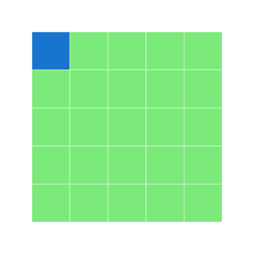
In a matrix, if you only have a single index value, it assumes the cell you refer to is the same (e.g. [1] ~ [1,1])
single index accesses first column of data.frame
grid7 <- block_grid(5, 5, type = "data.frame")
grid7[1] <- "dodgerblue3"
grid7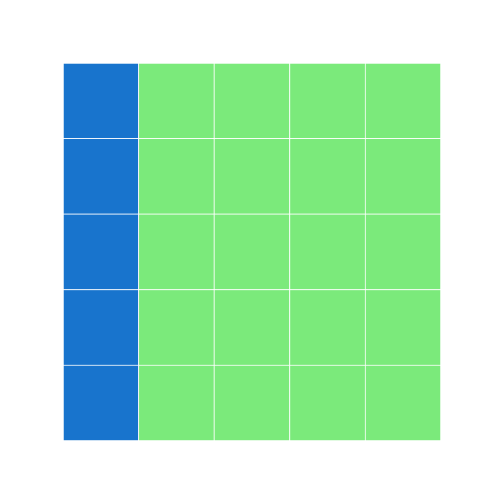
print_raw(grid7) #shows the data frame V1 V2 V3 V4 V5
1 dodgerblue3 #7BEA7B #7BEA7B #7BEA7B #7BEA7B
2 dodgerblue3 #7BEA7B #7BEA7B #7BEA7B #7BEA7B
3 dodgerblue3 #7BEA7B #7BEA7B #7BEA7B #7BEA7B
4 dodgerblue3 #7BEA7B #7BEA7B #7BEA7B #7BEA7B
5 dodgerblue3 #7BEA7B #7BEA7B #7BEA7B #7BEA7B
Here, with a data frame, if you only have a single index value, it assumes you mean the entire first column. How would we color the entire first row? What else can we do to make sure we are indexing properly?
grid7b <- grid7
grid7b[1,] <- "goldenrod"
grid7b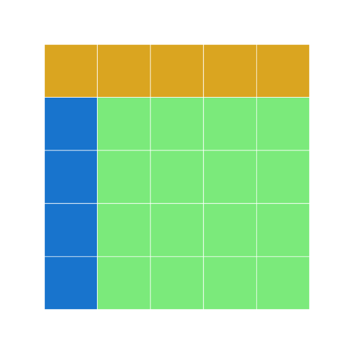
Remember the apply function from earlier? Let us use apply to change the light green cells in grid7 to olivedrab and the blue cells to darkslategray.
grid8 <- apply(grid7, 2, function(df) {
if (sum(df == "dodgerblue3") == 5) {
df[] <- "darkslategrey"
} else {
df[] <- "olivedrab"
}
return(df)
})
grid8 V1 V2 V3 V4 V5
[1,] "darkslategrey" "olivedrab" "olivedrab" "olivedrab" "olivedrab"
[2,] "darkslategrey" "olivedrab" "olivedrab" "olivedrab" "olivedrab"
[3,] "darkslategrey" "olivedrab" "olivedrab" "olivedrab" "olivedrab"
[4,] "darkslategrey" "olivedrab" "olivedrab" "olivedrab" "olivedrab"
[5,] "darkslategrey" "olivedrab" "olivedrab" "olivedrab" "olivedrab"
display(grid8)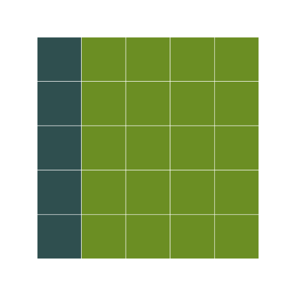
We need the display function here, since apply drops attributes, and my implementation of the grid needs the object to be marked with the block class to overlod the print method (I am sure there are more elegant implementations that can handle this better, without bothering the user. Any thoughts?)
One of the gotchas in R is how it coerces data structures when subsetting. Here is a simple way to visualize this behavior with data.frames.
grid9 <- block_grid(5, 5)
grid9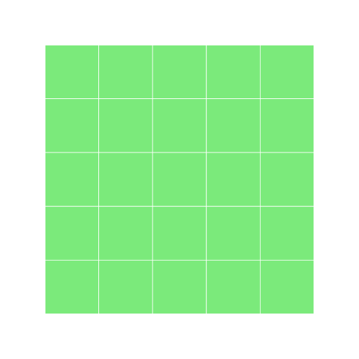
extracting the first column converts it to a vector
grid10 <- grid9[, 1]
display(grid10)
Conditionals (Control flow)
The other thing we need in order to create a heat map of our own is a way to pick a color based on a data value. The tool R gives us for doing this is called a conditional statement, and looks like this:
num <- 37
if (num > 100){
'greater'
} else {
'not greater'
} [1] "not greater"
'done'[1] "done"
The structure of conditional statements is similar to functions and loops. The second line of this code uses the keyword if to tell R that we want to make a choice. If the test that follows it is true, the body of the if (i.e., the lines indented underneath it) are executed. If the test is false, the body of the else is executed instead. Only one or the other is ever executed:
draw a diagram on the board of the what is happening (boxes and arrows)
Conditional statements don't have to include an else. If there isn't one, R simply does nothing if the test is false:
num <- 53
'before conditional...'[1] "before conditional..."
if (num > 100) {
'53 is greater than 100'
}
'...after conditional'[1] "...after conditional"
We can also chain several tests together using else if and else. This makes it simple to write a function that returns the sign of a number:
Sign <- function(num){
if (num > 0) {
return (1)
} else if (num == 0) {
return (0)
} else {
return (-1)
}
}
paste('sign of -3:', Sign(-3))[1] "sign of -3: -1"
One important thing to notice the code above is that we use a double equals sign == to test for equality rather than a single equals sign because the latter is used to mean assignment. This convention was inherited from C, and while many other programming languages work the same way, it does take a bit of getting used to... You can think of it in a sentence the difference between "equals" (=) and "is equal to" (==).
We can also combine tests using & and | and is only true if both parts are true:
if (1 > 0 & -1 > 0) {
'both parts are true'
}while "or" (|) is true if either part is true:
if (1 < 0 | 'left' < 'right') {
'at least one test is true'
}[1] "at least one test is true"
In this case, "either" means "either or both", not "either one or the other but not both".
Challenge - Using conditional operators
- Write a function called
nearthat returnsTRUEif its first parameter is within 10% of its second andFALSEotherwise. Compare your implementation with your neighbor's: do you return the same answer for all possible pairs of numbers? How might you make a simple test for your function?
near <- function(param1, param2) {
#returns True if its first parameter is within 10% of its second and False otherwise.
ten_percent <- param2 * 0.1
if (param1 >= (param2 - ten_percent) & param1 <= (param2 + ten_percent)) {
TRUE
} else {
FALSE
}
}Nesting
Another thing to realize is that if statements can be combined with loops just as easily as they can be combined with functions. For example, if we want to sum the positive numbers in a list, we can write this:
numbers <- c(-5, 3, 2, -1, 9, 6)
total <- 0
for (n in 1:length(numbers)) {
if (numbers[n] >= 0) {
total <- total + numbers[n]
}
}
paste('sum of positive values:', total)[1] "sum of positive values: 20"
We could equally well calculate the positive and negative sums in a single loop:
pos_total <- 0
neg_total <- 0
for (n in 1:length(numbers)) {
if (numbers[n] >= 0) {
pos_total <- pos_total + numbers[n]
} else {
neg_total <- neg_total + numbers[n]
}
}
paste('negative and positive sums are:', neg_total, pos_total)[1] "negative and positive sums are: -6 20"
We can even put one loop inside another:
for(consonant in 1:nchar('bcd')) {
for (vowel in 1:nchar('ae')) {
print(c(consonant, vowel))
}
}[1] 1 1
[1] 1 2
[1] 2 1
[1] 2 2
[1] 3 1
[1] 3 2
The inner loop runs from start to finish each time the outer loop runs once: draw a diagram with boxes and arrows for what is happening
We can combine nesting and conditionals to create patterns in an image:
height <- 5
width <- 5
square <- block_grid(height, width, type="matrix")
for(x in 1:5) {
for (y in 1:5) {
if (x < y) {
square[x,y] = "hotpink"
} else if (x == y) {
square[x,y] = "Gray40"
} else {
square[x,y] = "chartreuse"
}
}
}What do you think this will look like?
square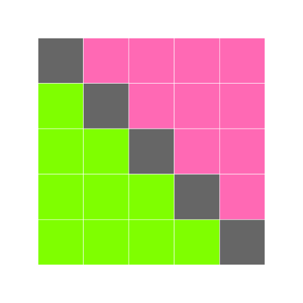
This is our first hand-made data visualization: the colors show where x is less than, equal to, or greater than y.
Challenge - Changing the order of loops
- Will changing the nesting of the loops in the code above—i.e., wrapping the Y-axis loop around the X-axis loop—change the final image? Why or why not?
Creating a Heat Map
The last step is to turn our data into something we can see. As in previous lessons, the first step is to get the data into memory:
dat <- data.matrix(read.csv("data/inflammation-01.csv", header=FALSE))
dim(dat)[1] 60 40
The second is to create an image grid that is the same size as the data:
height <- nrow(dat)
width <- ncol(dat)
heat_map <- block_grid(height, width, type="matrix")The third step is to decide how we are going to color the cells in the heat map. To keep things simple, we will use red, green, and blue as our colors, and compare data values to the data set's mean. Here's the code:
for(x in 1:height) {
for (y in 1:width) {
if(dat[x, y] < mean(dat)) {
heat_map[x, y] = "red"
} else if(dat[x, y] == mean(dat)) {
heat_map[x, y] = "green"
} else {
heat_map[x, y] = "blue"
}
}
}
heat_map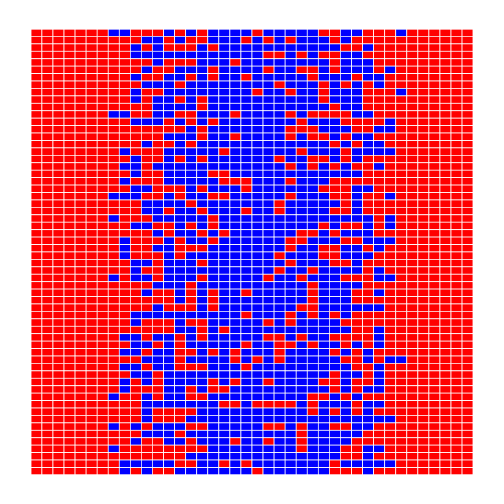
This may be what we asked for, but both the image and the code are hideous:
- It's too large for us to view the whole thing at once on a small laptop screen.
- Our first heatmap had time along the X axis; this seems to have time along the Y axis.
- Red against blue is pretty hard on the eyes.
- The heatmap only shows two colors because none of the (integer) measurements has exactly the same value as the (fractional) mean.
- Red-green color blindness is not uncommon (5-10% males!) try the simulator
- We are calculating the mean of data either once or twice each time we go through the loop. That means that on a 40×60 data set, we are performing the same calculation 2400 times.
Here's how we can improve it:
- We can give ImageGrid an optional parameter block_size to set the size of each block.
- We can transpose our data before creating the grid.
- We can pick better colors (I'm personally fond of orchid, fuchsia, and hot pink).
- Instead of checking if values are exactly equal to the mean, we can see if they are close to it.
- We can calculate the mean once, before we start our loops, and use that value over and over.
Our modified code looks like this:
flipped <- t(dat)
height <- nrow(flipped)
width <- ncol(flipped)
center <- mean(flipped)
heatmap <- block_grid(height, width, type="matrix")
for (x in 1:height) {
for (y in 1:width) {
if (flipped[x, y] < (0.8 * center)) {
heatmap[x, y] <- "lightpink"
} else if (flipped[x, y] > (1.2 * center)) {
heatmap[x, y] <- "deeppink4"
} else {
heatmap[x, y] <- "hotpink"
}
}
}
heatmap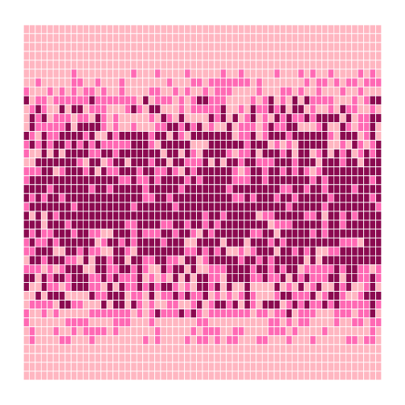
That's a bit better—but now the contrast between the colors isn't great enough. And there still aren't very many fuchsia cells: we may want to widen the band around the mean that gets that color. We could rewrite our loop a third time, but the right thing to do is to put our code in a function so that we can experiment with bands and colors more easily.
make_heatmap <- function(values, low_color, mid_color, high_color, low_band, high_band) {
height <- nrow(values)
width <- ncol(values)
result <- block_grid(height, width, type="matrix")
center <- mean(values)
for (x in 1:height) {
for (y in 1:width) {
if (values[x, y] < (low_band * center)) {
result[x, y] <- low_color
} else if(values[x, y] > (high_band * center)) {
result[x, y] <- high_color
} else {
result[x, y] <- mid_color
}
}
}
result
}To test this function, we'll run it with the settings we just used:
h <- make_heatmap(flipped, "lightpink", "hotpink", "deeppink4", 0.8, 1.2)
h
That seems right, so let's widen the band and use more dramatic colors:
h <- make_heatmap(flipped, "gray60", "chartreuse", "darkgreen", 0.5, 1.5)
h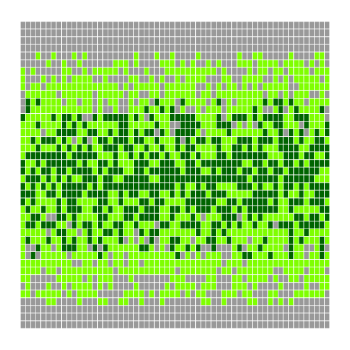
We'll probably want to experiment a bit more before publishing, but writing a function has made experimenting easy. We can make it even easier by re-defining our function one more time to give the parameters default values. While we're at it, let's put the low and high bands at the front, since they're more likely to change than our color choices:
make_heatmap <- function(values, low_band=0.5, high_band=1.5,
low_color="gray60", mid_color="chartreuse", high_color="darkgreen") {
height <- nrow(values)
width <- ncol(values)
result <- block_grid(height, width, type="matrix")
center <- mean(values)
for (x in 1:height) {
for (y in 1:width) {
if (values[x, y] < (low_band * center)) {
result[x, y] <- low_color
} else if(values[x, y] > (high_band * center)) {
result[x, y] <- high_color
} else {
result[x, y] <- mid_color
}
}
}
result
} Once default values are added, the function's first line is too long to fit comfortably on our screen. Rather than breaking it wherever it hits the right edge of the screen, we have divided the parameters into logical groups to make it more readable.
Again, our first test is to re-run it with the same values as before (which we give it in a different order, since we've changed the order of parameters):
h <- make_heatmap(flipped, 0.5, 1.5, "gray60", "chartreuse", "darkgreen")
h
We can now leave out everything except the data being visualized, or provide the data and the bands and re-use the default colors and block size:
h <- make_heatmap(flipped)
h
h <- make_heatmap(flipped, 0.4, 1.6)
h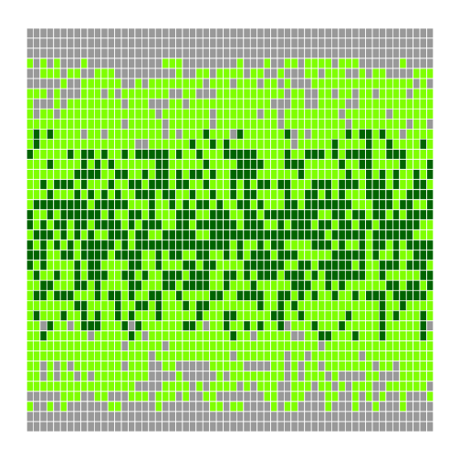
We can now explore our data with just a few keystrokes, which means we can concentrate on our science and not on our programming.
Challenge - Understanding the make_heatmap() function
- Why did we transpose our data outside our heat map function?
- Why not have the function perform the transpose?
- Why does the heat map function return the grid rather than displaying it immediately?
- Do you think this is a good or bad design choice?
- Explain what the overall effect of this code is:
temp = left left = right right = temp
Key Points
- Learn how to source code
- Use the
block_gridclass from the rblocks source code to create simple "images" made of colored blocks. - Specify colors use (red, green, blue) triples, each component of which is an integer in the range 0..255.
- Use
ifcondition to start a conditional statement,else ifcondition to provide additional tests, andelseto provide a default. - The bodies of the branches of conditional statements must be indented.
- Use
==to test for equality. - X and Y is only true if both X and Y are true.
- X or Y is true if either X or Y, or both, are true.
- Nest loops to operate on multi-dimensional data.
- Put code whose parameters change frequently in a function, then call it with different parameter values to customize its behavior.
Next Steps
Let's store the functions for our code in another script, which we can name project_functions.R. We can source these functions using source at the beginning of our main script. Keeping functions in one place, at the top of our code or in a separate file, helps keep our programs more organized and can make debugging easier.
Our final heatmap function is 17 lines long, which means that if there's a 95% chance of each line being correct, the odds of the whole function being right are only 41%. Before we go any further, we need to learn how to test whether our code is doing what we want it to do, and that will be the subject of the next lesson.